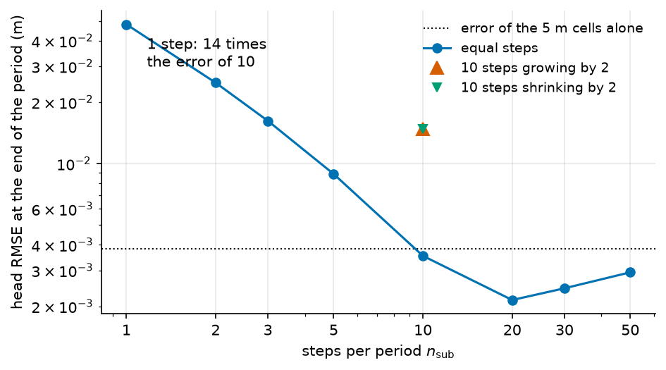

The solvers of the aquifer#
HydroModPy integrates the groundwater flow equation with one of three solvers: MODFLOW 6, MODFLOW-NWT or the in-house Boussinesq solver. This page says which packages and options HydroModPy writes for each of them, how it sets the time steps, what happens to a cell that dries, how the two MODFLOW solvers differ, and how a transport run hooks onto a flow run. What each solver supports is listed in Solvers.
Note
Scope. The balance of a cell, (19), is on The groundwater flow problem. The Boussinesq solver is on Boussinesq theory and the XT3D terms on XT3D on irregular meshes.
Sources#
The MODFLOW equations, packages and numerical methods are documented by the USGS. This page does not repeat them. It says which options HydroModPy writes.
MODFLOW 6 groundwater flow model: control-volume formulation, Newton-Raphson, storage and stress packages [Langevin et al., 2017].
MODFLOW 6 framework and the IMS linear solver [Hughes et al., 2017].
XT3D option of the
NPFpackage [Provost et al., 2017].MODFLOW-NWT, the Newton formulation of MODFLOW-2005 [Niswonger et al., 2011], on the MODFLOW-2005 groundwater flow process [Harbaugh, 2005].
MODFLOW 6 groundwater transport model [Langevin et al., 2022] and water mover package [Morway et al., 2021].
The MODFLOW 6 input guide and the MODFLOW-NWT guide, for the definition of each package and option.
The three solvers side by side#
MODFLOW 6 |
MODFLOW-NWT |
Boussinesq |
|
|---|---|---|---|
Name in |
|
|
|
Mesh |
DISV for every engine of |
the |
the |
Time |
backward Euler, equal steps in a period |
backward Euler, equal steps in a period |
one backward Euler step per period |
Transport |
GWT and particle tracking |
MODPATH and MT3DMS |
refused |
The names in the first row are the values read by simulation.process.solvers. The
traits of each solver, generated from the code, are on Solvers.
Notation of this page
Lengths are in meters and time is in seconds: the run is written in seconds whatever the calendar of the file.
Symbol |
Meaning |
Unit |
Set by |
|---|---|---|---|
\(\Delta t\) |
length of a stress period, the stretch of time that gets one forcing value |
s |
|
\(\delta t\) |
solver time step, \(\delta t = \Delta t / n_\mathrm{sub}\) |
s |
derived |
\(n_\mathrm{sub}\) |
number of solver time steps in a stress period |
||
\(z_\mathrm{top}\) |
model top, the land surface |
m |
|
\(z'_\mathrm{top}\) |
computational top MODFLOW 6 reads, \(z'_\mathrm{top} = z_\mathrm{top} + \max H_1 - H_1\) |
m |
derived |
\(H\) |
aquifer thickness, \(H = z_\mathrm{top} - z_\mathrm{bot}\) |
m |
|
\(H_1\) |
thickness of the top layer under the ground |
m |
|
\(K\) |
horizontal hydraulic conductivity, the same along \(x\) and \(y\) |
m/s |
|
\(K_z\) |
vertical hydraulic conductivity, \(K / \beta\), or the parameter with the id |
m/s |
|
\(\beta\) |
ratio \(K / K_z\) |
||
\(S_s\) |
specific storage |
1/m |
|
\(S_y\) |
specific yield |
Time steps#
The three solvers read the same time grid, built from simulation.time. Each
stress period has a length \(\Delta t\) and holds every forcing constant. The two MODFLOW
solvers cut it into \(n_\mathrm{sub}\) equal steps, \(\delta t = \Delta t / n_\mathrm{sub}\),
with a step multiplier of 1: MODFLOW 6 in its TDIS
package, MODFLOW-NWT in DIS.
Equal steps are a choice with a test behind it. On a confined column against a closed-form
solution, test_stress_period_substepping finds equal steps more accurate than a geometric
growth of the steps, in either direction, and one step per period about ten times less
accurate than ten steps (Validation). The unconfined problem is nonlinear, so this
holds there only approximately. The same case reports that one step per period moves the
monthly discharge of a drained hillslope by tens of per cent against a refined run. One
step per period is therefore not a neutral choice.

Fig. 45 The confined column of test_stress_period_substepping: 200 cells of 5 m, a
head step of 1 m held for 31 days, with the backward Euler equations MODFLOW 6 solves
for this linear case. Ten steps that grow or shrink by 2 give the same error, about
four times that of ten equal steps.#
A period is steady or transient. With flow.flow_regime set to "steady", every
period is steady. With "transient", only the first period is steady, and only when
flow.first_period_steady is true. With solver.modflow6.runtime.mf6_ats, MODFLOW 6
adds adaptive time stepping
to the transient periods: each period starts at the step above, ATS subdivides it only where
the solver cannot converge, and it never grows past that step. Steady periods are left out.
The starting heads are on The starting heads. In the code:
build_temporal_discretization_from_time_grid.
The nonlinear solve#
MODFLOW 6 and MODFLOW-NWT both write the balance (19) for every active cell and every step, and solve the nonlinear system by Newton-Raphson outer iterations, with a linear solve inside each one [Hughes et al., 2017, Niswonger et al., 2011]. The tests that stop the iteration and the percent discrepancy of the budget are the ones of the listing file, defined in the sources above. They do not measure the same thing on the two solvers: MODFLOW-NWT tests a norm of the residual over all cells, MODFLOW 6 a maximum over the cells of the linear solve. What HydroModPy adds:
The keys that set the tests are
solver.modflow6.runtime.mf6_outer_dvclose,solver.modflow6.runtime.mf6_inner_dvcloseandsolver.modflow6.runtime.mf6_inner_rclosefor MODFLOW 6, andsolver.modflow_nwt.runtime.nwt.headtolandsolver.modflow_nwt.runtime.nwt.fluxtolfor MODFLOW-NWT. Heads are in m, flows in m³/s. HydroModPy writesinner_rclosewith no option, which keeps the absolute largest residual of a cell. When the key is unset, the value of the complexity preset applies.The run metrics keep the percent discrepancy of the last step and the worst one of the run, both read from the volume budget of the entire model and not from a package budget. A calibration rejects a trial whose worst step is above
calibration.reject_water_budget_above(one per cent unless the file says otherwise). The auxiliary steady solve of asteady_statestart accepts its result only within 0.1 per cent. In the code:model_percent_discrepancies.
MODFLOW 6, package by package#
run_pre_processing assembles the FloPy simulation in this order. A package marked “if”
is written only when the file asks for it. Each package name links its input-guide page.
Package |
Written |
|---|---|
TDIS, IMS, GWF (the Newton options), DISV, IC, NPF, STO, RCHA, OC |
always |
if |
|
if |
|
if the |
|
if one is active |
|
if a well exists |
|
if a lake is active |
|
if a barrier exists |
|
if |
|
if one transfer exists |
HydroModPy writes no UZF, GHB or RIV package. Three notes on the table.
Storage. STO receives \(S_y\) and \(S_s\) and a steady or transient flag per period. The flags are written only where they change. \(S_s\) matters only where the aquifer is confined, but MODFLOW 6 asks for a value. In the code:
sto_period_settings.Recharge. RCHA gets one rate per column and per period: the value of
flow.sinks_sources.recharge.values, or the recharge the soil reservoir computes (The daily soil reservoir). The cells of a lake that the model makes inactive receive none, because LAK handles the rain on the lake. The package also carries aCONCENTRATIONauxiliary variable, which transport uses (Transport coupling). When the layers hold a pass-through cell (Layers by surfaces), RCHA also writes the layer arrayIRCH, set to the top active layer of each column, because MODFLOW 6 drops the flux of a pass-through top cell instead of moving it down. Without such a cell the files are the same as before. In the code:mask_recharge_on_lake_cells,areal_layer_index.Output. OC saves the head at the last step of every stress period and the budget at every step, and prints the budget of every step. The catalog keeps one record per stress period: the head at its end, each flux as the mean of its steps weighted by their length (A period cut into time steps).
The grid#
MODFLOW 6 reads the cells of every mesh engine as a DISV grid: one code path covers the three.
A regular model is a DISV grid whose cells are the DEM pixels. The cells of the voronoi
engine are orthogonal to their connections, and the triangles of the triangle engine are not,
which turns XT3D on. The engine is mesh.engine and the number of layers is
domain.layers.nlay, read from the table [domain.layers] that MODFLOW-NWT reads too.
The mesh is the subject of The mesh.
The active cell of a column. idomain is 1 for an active cell, 0 for an inactive one and
-1 for a vertical pass-through cell, and every test of activity reads it as above 0. The
packages that act on the surface of a column act on its top active cell, and not on the first
layer: the drains, the supports of the constant heads, the surface of the evapotranspiration,
the computational top below, the filling of the closed depressions, the lake footprint and the
saturated thickness the calibration reads. The footprint of a lake stays closed to them.
A constant head is written on active cells only.
The computational top. Under Newton, MODFLOW 6 builds the horizontal conductance from
the full thickness of the two cells times the saturation of the upstream cell, where
MODFLOW-NWT and MODFLOW-USG use the saturated thickness
(GwfConductanceUtils.f90,
NPF) [Langevin et al., 2017].
Where the thickness \(H\) changes from one cell to the next, the transmissivity is then too
low by about \(\Delta H / (2H)\). The grid MODFLOW 6 reads therefore has a computational top
\(z'_\mathrm{top} = z_\mathrm{top} + \max H_1 - H_1\), with \(H_1\) the thickness of the top
layer under the ground: every cell of the top layer gets the same thickness. A thickness
that is the same everywhere gives \(z_\mathrm{top}\) back, so no file changes then. The top moves
only on the columns whose top active cell is in the top layer: a column with a pinched
first layer keeps its interfaces, since its active cell joins cells of the second layer, which
cannot be raised. This is a
numerical device of HydroModPy, not a USGS practice. Every package elevation (drains, EVT,
streambeds, lake banks, barriers, the ocean), the initial heads and the run store keep the
ground. Water above the ground stays in the aquifer up to \(z'_\mathrm{top}\), with its
specific yield, where a cell topped at the ground would turn confined; the drains at the
ground keep that rise to a few centimeters. Two limits. A lake column keeps its ground, since a raised top would
reach into the lake, so the thickness still changes at the banks. Only the top of the top
layer moves: a lower layer whose saturated part changes from cell to cell keeps the bias.
Anyone who opens the native MODFLOW 6 files (flopy, ModelMuse) sees a top above the ground
wherever the thickness varies. That is intended; the ground is topography in the run
store. In the code: disv_grid_kwargs.
Flow between cells, and XT3D#
NPF receives \(K\), \(K_z = K/\beta\) and the convertible flag, and K22 and the three angles when
the flow sets them (The conductivity tensor). With the two-point conductance
(20), the flux between two cells is exact only when the line between the
centers is perpendicular to the shared face and the conductivity is isotropic. XT3D adds
the missing terms [Provost et al., 2017]. HydroModPy decides about it once per run; the
rule and its trigger are on XT3D on irregular meshes. XT3D makes the
matrix non-symmetric, so the IMS preset is promoted when needed
(The solution: Newton and IMS). Two tensors need XT3D for a consistent result, so HydroModPy
turns it on and raises a RuntimeWarning on its cost. The first is a tilted tensor
(angle2 or angle3 not zero), because MODFLOW 6 reads these two angles only under XT3D. A
tilt writes the three angles, the missing ones as zero, since MODFLOW 6 refuses
ANGLE2 without ANGLE3. The second is a K22 different from \(K\) on a cell whose angle1 is
not a multiple of 90 degrees, or on any cell of an unstructured mesh. The axes of the tensor
then leave the connections and the two-point flux drops the cross terms
[Provost et al., 2017], so the head error does not shrink with refinement. For a steady well
with \(K_{22} = K/10\) and angle1 at 30 degrees on a structured grid, the head RMSE stayed at
2.2 m for a 7 m drawdown with cells of 40 m then 20 m, and fell to 0.04 then 0.01 m under
XT3D. XT3D costs time. On a steady benchmark of 120 by 120 cells and 10 layers, a run took 115
to 136 s with it, against 12 s without. A written solver.modflow6.runtime.mf6_enable_xt3d is
still obeyed, true without a warning and false with a RuntimeWarning when one of these
two tensors is set. In the code: resolve_xt3d_decision, k_tensor_is_tilted,
k_tensor_is_off_axis.
Evaporation, drains, lakes and streams#
The laws, conductances and worked cells of these exits are on How water leaves the aquifer.
Evaporation. Under MODFLOW 6, EVTA receives a routed negative recharge (
flow.sinks_sources.recharge.negative_to_evt) or, in soil mode, the ETP the soil could not meet, with the layer arrayIEVTwhen the layers hold a pass-through cell. The loaded ETP is ignored outside soil mode, with a warning (Drains and evapotranspiration at the top of the model).Drains. One drain in the top active layer of every column that is not an ocean or stream constant-head cell. It sits at the ground surface or half a band depth below it.
solver.sink_fillsets it to zero in closed depressions (Drains and evapotranspiration at the top of the model). In the code:build_drain_stress_period_data.Lakes, streams and barriers. LAK, SFR, MVR and HFB exist under MODFLOW 6 only. LAK and SFR are built after the drains, so that the drains that coincide with a stream reach can be removed and the drainage of the hillslope can be handed to the stream or lake it flows to. MVR is built last, because it names the packages it moves water between (Lakes and reservoirs, Streams and the water mover).
Imposed heads and wells#
CHD imposes the head of the ocean, stream and lateral boundaries on their cells. MODFLOW 6
takes one CHD package, so the three supports are merged, and a cell claimed twice keeps
the head written last. WEL adds the rate of each well. Under the Newton formulation the
code sets auto_flow_reduce on WEL, so that a well that dewaters its cell tapers its
extraction instead of making the head oscillate across the threshold. MODFLOW 6 reads it as
a fraction of the cell height, and the option is one value per package: it is the
smallest fraction that keeps the interval within a tenth of the aquifer below the ground
in every well cell, 0.1 when the top is the ground. In the code:
assemble_constant_head_stress_period_data, well_flow_reduce_fraction.
The solution: Newton and IMS#
The code writes NEWTON, and adds UNDER_RELAXATION when
solver.modflow6.runtime.mf6_newton_under_relaxation is true. Newton is on by default,
because every layer is convertible. The UNDER_RELAXATION of the Newton option damps the
head of a cell that Newton would push below its bottom. It is not the under-relaxation of
IMS, which adjusts the update factor of the outer iteration.
The code passes the closure criteria, the iteration limits and the optional
solver.modflow6.runtime.mf6_linear_acceleration,
solver.modflow6.runtime.mf6_under_relaxation and solver.modflow6.runtime.mf6_inner_rclose
to the IMS package, with the optional solver.modflow6.runtime.mf6_reordering_method. The
IMS can renumber the cells before it factorises, with reverse Cuthill-McKee (rcm) or minimum
degree (md) [Hughes et al., 2017]. The default, none, keeps the numbering of the
mesh and writes nothing. The cases measured on 2026-10-26 gave no gain: on Voronoi meshes of
14 400 to 144 000 cells, in a shuffled or a row-sorted numbering, and on the steady Flume
solve of 73 400 cells, rcm and md added 3 to 73 per cent of inner iterations and did not
cut the wall time. The option reaches the IMS of the flow and the one of the transport. The
complexity, solver.modflow6.runtime.mf6_ims_complexity, defaults
to COMPLEX. A configured SIMPLE complexity
is promoted to COMPLEX when XT3D is on, and to at least MODERATE under Newton, because
SIMPLE assumes a symmetric, well-conditioned matrix. Two combinations are refused:
solver.modflow6.runtime.mf6_newtonandsolver.modflow6.runtime.mf6_enable_rewettogether stop the run with[HMPY.E405]when the NPF package is built, because MODFLOW 6 forbids rewetting under the Newton formulation.Conjugate-gradient acceleration under Newton stops with
[HMPY.E406], because the Newton Jacobian is not symmetric and CG cannot solve it. The check runs before any grid is built. UseBICGSTAB, or leavesolver.modflow6.runtime.mf6_linear_accelerationunset.
In the code: resolve_ims_complexity.
MODFLOW-NWT, package by package#
ModflowNwt builds the FloPy model in this order, and assemble_flopy_packages adds the
stress packages.
Package |
Written |
|---|---|
NWT: the Newton solver and its closure |
always |
DIS: the structured grid and the steps of Time steps |
always |
CHD: head imposed on the transient ocean and side cells |
if a transient boundary is active |
BAS: active cells ( |
always |
UPW: \(K\), \(K_z\), \(S_y\), \(S_s\) with upstream weighting |
always |
EVT |
if an ETP or a negative recharge exists |
RCH |
if a recharge exists |
DRN |
if the |
WEL |
if a well exists |
OC: head and budget at every step |
always |
LMT: the link file of MT3DMS |
when a transport follows |
The static ocean and side boundaries are not CHD rows. They are cells with a negative
ibound in BAS, which imposes the starting head on them. Four things differ from
MODFLOW 6.
The mesh must be the
regularengine. A file whosemesh.engineis another engine is refused when it is read. NWT builds the grid of the DEM pixels, or a coarser one given bymesh.cell_size.The unconfined law is the upstream-weighted UPW package [Niswonger et al., 2011], with a smoothing of the saturated thickness set by
solver.modflow_nwt.runtime.nwt.thickfact.EVT uses the topography. The code sets the EVT surface to the top lowered by
flow.sinks_sources.etp.surface_offsetand the extinction depth toflow.sinks_sources.etp.extinction_depth, withnevtopfromsolver.modflow_nwt.runtime.evt.nevtop. The fieldsolver.modflow_nwt.process_specific.exdpis declared but nothing in the code reads it. When no ETP is active, a routed negative recharge uses an offset of 2 m and a depth of 1 m.No soil reservoir, lakes, streams or barriers. The checks listed under Limits stop the file.
In the code: assemble_flopy_packages.
Wetting and drying#
A cell dries when the head falls to its bottom. Under Newton, MODFLOW 6 smooths the
saturated thickness near the bottom with a fraction of the thickness that it sets
internally, and HydroModPy has no key for it [Langevin et al., 2017]. MODFLOW-NWT does the
same in its SAT_THICK function, with the fraction read from
thickfact [Niswonger et al., 2011]. The smoothing
keeps the Newton step defined. It does not move the water table. The solvers differ in what
they do next.
Case |
What happens |
Set by |
|---|---|---|
MODFLOW 6, Newton |
The cell stays in the equations. Conductance and storage go to zero smoothly, and |
|
MODFLOW 6, standard formulation with rewet |
The cell is rewetted by the NPF rewet test. Newton must be off. |
|
MODFLOW-NWT |
The cell stays in the equations. A dry cell is written with the dry-head value, and the reader of the results turns that value into a missing value. |
|
Boussinesq |
The saturated thickness is bounded between zero and the cell thickness, without smoothing ((18)). |
the runtime, see Boussinesq theory |
Rewetting is off unless solver.modflow6.runtime.mf6_enable_rewet is true. When it is on,
the NPF package gets WETFCT, IWETIT and IHDWET from the mf6_rewet_* keys, and an
array WETDRY that is zero on inactive cells and the absolute value of
solver.modflow6.runtime.mf6_rewet_wetdry elsewhere. In the code: resolve_rewet_npf_options.
MODFLOW 6 against MODFLOW-NWT#
The same project file can run on either. The solver that runs is the first name in
simulation.process.solvers of the flow process. solver.backend is the
fallback when no process names one, and the key the compatibility checks of a file are run
against. Write the same name in both. solver.backend is a plain string, the name of a registered flow solver, and an unknown name
is refused with the names this installation serves. The settings of each solver are a table under
its name, [solver.modflow_nwt] and [solver.modflow6]. This page ranks neither solver.
Topic |
MODFLOW-NWT |
MODFLOW 6 |
|---|---|---|
Newton |
always |
|
Dry cells |
no rewetting ( |
rewetting off, refused with Newton |
Layering |
|
|
Non-orthogonal flux |
not available |
|
Conductivity tensor |
refused |
|
Output |
head and budget at every step, stored per period |
head at the last step, budget at every step, stored per period |
Loaded ETP |
drives |
ignored outside soil mode |
Streams, lakes, barriers |
refused |
|
Restart, cyclic spin-up |
refused |
supported |
The vertical conductivity is a ratio on both, \(K_z = K / \beta\). The key is
solver.modflow_nwt.process_specific.vka for MODFLOW-NWT, with layvka set so that vka
is read as a ratio, and solver.modflow6.process_specific.vka for MODFLOW 6. A Kv of the flow
replaces the ratio on both. MODFLOW-NWT then writes layvka = 0 and vka = Kv, so UPW reads
a conductivity, and a vka other than 1 beside a Kv is refused.
Sources and sinks. Recharge, wells, drains and constant heads are the same quantities in both. Two points differ.
The loaded ETP is a sink in MODFLOW-NWT, with its surface at the top minus
flow.sinks_sources.etp.surface_offsetand the extinction depthflow.sinks_sources.etp.extinction_depth. MODFLOW 6 draws none outside soil mode, and says so. In soil mode it writes the ETP the soil left unmet (The daily soil reservoir).A negative recharge sent to
EVTbyflow.sinks_sources.recharge.negative_to_evtfollows the same rule in both (Rain and evaporation: the forcing), with a different geometry: the model top andsolver.modflow6.process_specific.evt_extinction_depthin MODFLOW 6, the twoetpkeys above or fixed constants in MODFLOW-NWT.
Comparing the two. To compare the solvers, set the head test to the same value on both
sides (solver.modflow_nwt.runtime.nwt.headtol against the two dvclose keys): the residual
tests do not measure the same thing. Validation lists the cases that run both solvers
against the same closed-form solution, and runs both on the catchment of example 04, where
their heads differ by less than a millimeter. Where the cell thickness changes from one
cell to the next, the two conductances differ, and the
computational top brings MODFLOW 6 back to
MODFLOW-NWT: on the circular-island cases, whose top follows the ground over a flat
bottom, both sit at the same distance from the closed form. Validation gives the thresholds and the reason
for each. A threshold is a bound a test accepts, not a measured error, so it ranks nothing.
The Boussinesq solver#
The in-house solver writes one residual per triangle of the triangle engine. Its time steps and
the choice of its engine (solver.boussinesq.backend) are on Boussinesq theory.
solver.boussinesq.surface_interaction_model picks the closure for the
water that reaches the surface. It builds recharge, wells, the side, stream and ocean
imposed heads, and top drainage, and refuses the rest. Its flux between two cells uses the
two cell centers only: on triangles far from equilateral it is not consistent, and the
patch test of Validation shows the error that refinement does not remove. Its
equations and closures are on Boussinesq theory.
The linear reservoir#
The sixth solver replaces the grid of the aquifer with one state: the depth of water on
the cell. It integrates ds/dt = R - s/tau exactly on every piece of constant rate the
run carries, where R is the recharge of the run and tau the time constant of
[solver.linear_reservoir]. One discharge and one reservoir storage leave the solve for
every period, at the station of the whole catchment, and the budget rows of the terms
recharge, drain and storage close it on the mass by construction.
Transport coupling#
A transport process attaches to the flow process that came before it. The planner binds
each transport run to an earlier flow run of the right solver, in the order written in the
file, and stops with requires an earlier process using flow/<solver> when there is none.
The pairs are declared by each adapter as its requires attribute.
Transport process |
Needs the flow solver |
What it does |
|---|---|---|
|
|
concentration in the flow field |
|
|
particle tracking, MODFLOW 6 PRT |
|
|
particle tracking, MODPATH 6 |
|
|
concentration, MT3DMS |
The adapter of a transport receives four objects from the runner. model is the frozen
Model the flow was built from, the only Model a transport works from. options is the
validated table of its solver, [transport.modflow6] for the GWT of MODFLOW 6. The folder
it works in is the folder of the flow run itself, and upstream[0] is the SolverRun of
that flow.
What a transport declares as its reads is face_flow: the flux across each connection
between two cells, at every time step, in the format the solver files of the flow carry.
The name is the one of the field registry, where connection_cells sits beside it and
names the two cells of each connection, the smaller flat index first. The run store keeps
the pair only when simulation.results.keep_face_flows is true, in m3/s, one value
per connection at each stored stamp, the mean of the steps of the stamp weighted by their
length. A run of the default keeps no inter-cell flow, and the diagonal of FLOW-JA-FACE,
the residual of each cell, is never kept, because the per-cell budget already carries it.
MODFLOW 6 writes it as FLOW-JA-FACE in the cell-by-cell budget file of every step;
MODFLOW-NWT writes its face flows in the same file, and the link file of MT3DMS reads
from it. The flow solver writes what reads needs: a file that pairs a transport with a
flow solver that writes none of it is refused when the file is read, with the flow
solvers that write it. A transport of the family of its flow reaches what it reads
through that flow run, and none of them reads the run store during the solve. A
concentration transport stores its answer under the name of the solute,
concentration/<spc_name> in the run store, and a store written by a 2.0.0 run still
reads from the bare path.
MODFLOW 6 GWT#
Modflow6Transport adds a GWT
model to the MODFLOW 6 simulation of the flow run [Langevin et al., 2022]. It reuses the
DISV grid and the idomain of the flow model, couples the two models with a GWF6-GWT6
exchange, writes the whole simulation again and solves it: the flow is then solved twice,
in the same folder. It gives GWT its own IMS with
BICGSTAB, because advection makes the matrix
non-symmetric. The transport solve is linear, so it uses the configured complexity and no
Newton promotion. What HydroModPy sets in the GWT model:
advection with the scheme of
transport.modflow6.scheme;dispersion only when
transport.modflow6.disp_longortransport.modflow6.diffu_coeffis above zero;the mobile storage with
transport.modflow6.porosity. Without it, the code falls back on the specific yield and warns that this underestimates the pore volume, because the pore velocity is the Darcy flux divided by the porosity;decay of order zero or one, from
transport.modflow6.react_orderandtransport.modflow6.rate_decay.
Recharge is the only source of solute. Its concentration travels as the CONCENTRATION
auxiliary variable of RCHA, and the source and sink mixing package reads it. Constant-head
cells and wells bring water in at concentration zero.
MODFLOW 6 particle tracking#
modflow6_prt builds a PRT
model on the same flow model. It needs the cell-by-cell velocity that
solver.modflow6.runtime.save_specific_discharge writes. Its keys are in
[transport].
MODFLOW-NWT: MODPATH and MT3DMS#
MODPATH builds a MODPATH 6 input from the NWT run and stops if the flow model is not
MODFLOW-NWT. MT3DMS reads the link file that the LMT package writes, and NWT adds LMT
when a transport run follows it: the run declares face_flow through its reads, which
the runner collects into the hand_off member of the slot of the flow run. The file name is
solver.modflow_nwt.runtime.lmt.output_file_name. In the code: hand_off, filled
by slot_for of the runner.
MODPATH releases its particles from the seepage areas of the flow run when
transport.modpath.zone_partic is "seepage_clip". The mask is built from the
heads of the flow run itself, the water table of the first stored step against the
topography at half a drain band depth, exactly the rule the run store derives for its
seepage_mask, and the store is never read during the solve.
Assumptions#
Flow is saturated, in one phase, and the head is the only unknown. Water above the water table is not modeled: the code writes no UZF package, and the soil reservoir of The daily soil reservoir is a separate daily model that hands a recharge to the solver.
Every layer is convertible: it can be confined or unconfined from one step to the next.
The horizontal conductivity is isotropic, unless the flow sets
K22or the angles under MODFLOW 6. The vertical one is the horizontal one divided by one ratio for the whole model, or a per-cell \(K_z\) field.
Limits#
The matrix of what each solver declares is generated on Solvers. One rule gives
most of the refusals. Each flow solver lists in supports the traits of the model it honours, and a
file is refused when it is read if it uses a trait that the solver of the run leaves out. The message
gives the key the file wrote, the solver chosen and the solvers that honour the trait, for example
solver.backend = 'modflow_nwt' does not honor flow.sinks_sources.lakes: it would be ignored without a word. Remove it, or run a flow solver that honors it (modflow6).
A solver added by a plugin is checked by the same rule. A run sealed on disk is read back with a
warning instead of a refusal. The refusals are these.
Mesh. MODFLOW 6 reads every engine, MODFLOW-NWT the
regularengine and Boussinesq thetriangleengine. A file that pairs a solver with another engine is refused when it is read: the message startssolver 'modflow_nwt' reads the meshes of the engines. The size limit of the dense Boussinesq engines is on Boussinesq theory.Boundaries. Lakes, reservoirs, SFR and barriers need MODFLOW 6. The
streamboundary needs MODFLOW 6 or Boussinesq. Withsolver.backendatmodflow_nwt, the file is refused when it is read if it declares a stream network, a lake or astreamboundary, flow barriers or a dam cutoff wall. The message names the table the file wrote, for instanceflow.sinks_sources.sfrfor a stream network.Layers and tensor. MODFLOW-NWT has no pass-through cell:
pinch_out = "pass_through"is refused when the file is read, and the build refuses a grid that holds one.K22and the angles need MODFLOW 6, and the file is refused with MODFLOW-NWT or Boussinesq. Anangle2outside \([-90, 90]\) degrees and an angle with a vertical profile are refused. Boussinesq solves one layer and reads nodomain.layers, so it refuses more than one layer and thesurfacesmode. A vertical profile of K under a solver that lists no layers only warns, since the solver reads one K per column.Soil reservoir.
[flow.sinks_sources.recharge.soil]is refused with every solver that does not listsoil, which is MODFLOW 6 alone today.ETP. MODFLOW 6 draws no ETP outside soil mode, and only logs a warning. Boussinesq lists no
etpand refuses it when the file is read.Options of
[solver].solver.sink_fill,solver.drain_band_depth_mandsolver.drain_conductance_floor_m2_s, set away from their defaults, are refused under Boussinesq. It reads none of them, and a value it ignores would still move the seepage mask that a figure derives from the stored band.Transport. A transport solver follows the flow solvers its
requiresnames. It is refused whensolver.backendnames another flow solver, with the flow solvers it follows. It is refused too when the flow solver of the file writes none of what the transport reads,face_flow, with the flow solvers that write it.Hotstart and cyclic spin-up.
flow.restart_fromand a cyclic spin-up need MODFLOW 6, the only solver that lists the two traits insupports. A restart beside a steady or a cyclic start is refused for every solver, because the computed start would overwrite the restart.Lake and cyclic spin-up. A lake with a
spinup_cyclicstart runs on MODFLOW 6. Each cycle starts from the final lake stages of the cycle before, the main run starts from those of the last cycle, and the loop settles only when the heads and the lake stages have both settled.Windows.
simulation.time.window_lengthis refused under a steady run, a transport, a calibration, and, for a chain of more than one window, a flow solver that does not read an earlier state, because window 2 starts from the final state of window 1.A steady start that did not converge. The convergence of the auxiliary steady solve is known only at the solve. A transport run behind a steady start whose heads did not converge stops with
SolverDivergedError, and says how to tighten the closure insolver.modflow6.runtime.mf6_outer_dvcloseor to start from another state. Replaying a sealed run only warns.Newton. Newton with rewet (
HMPY.E405) and Newton with conjugate gradients (HMPY.E406) are refused (The solution: Newton and IMS).Not represented. The code writes no unsaturated-zone package (UZF), no variable-density package (BUY), no subsidence package (CSUB), and no GHB or RIV package.
Parameters of this page#
The keys of the solver options of this page. The keys of each transport process are on its reference card.
Checked by#
The tests that import the code of this page. The box is generated: a new test appears here on the next build.
250 test files import hydromodpy.solver.modflow6, hydromodpy.solver.modflow_nwt, hydromodpy.solver.modflow_common, hydromodpy.solver.modflow_grid, hydromodpy.solver.boussinesq. Their names say what they check.
validation: 6
integration: 24
- Persist trial series e2e. calibration
- Trials by rerun match a build. calibration
- A lake over a pinched layer solves in modflow6. solver
- A pinched layer solves in modflow6. solver
- Modflow6 rerun matches a build. solver
- Sfr lak mvr. solver
- Sfr standalone. solver
- Sfr store roundtrip. solver
- Lake band runoff api.
- Modflow6 api convergence.
- Modflow6 api input error.
- Modflow6 api runner.
- Modflow6 flow barrier hfb.
- Modflow6 head calibration disv.
- Modflow6 lake extractor e2e.
- Modflow6 lake marnage.
- Modflow6 lake piecewise forcing.
- Modflow6 lake ts6 equivalence.
- Modflow6 runner parity.
- Modflow6 two lake sill.
- Shared recharge equivalence.
- Soil recharge mf6.
- The computational top changes only the mf6 grid.
- Two lake voronoi stack e2e.
regression: 2
- The frozen mf6 run replays. frozen_replay
- Mesh net heads. mesh/mesh_net
e2e: 4
- A calibration never opens the index.
- Sfr cheze e2e.
- Sfr cheze per cell discharge e2e.
- Workflow from scratch.
scenarios: 3
- A run holds on a shared install.
- Runs weigh what their level keeps.
- Two runs in two processes.
ports: 1
- Solver.
processes: 1
- Jobs. server
unit: 209
- Picard. annex/solver/boussinesq_picard
- Metrics solver extract. calibration
- Observations observed network. calibration
- Protocols boilerplate. calibration
- Runners phase regime. calibration
- Runners prepared model. calibration
- Runners trial. calibration
- Routing. catchment/drainage
- Pipeline. catchment/preprocess
- Config refusals. config
- Field metadata. config
- Flow lake config. config
- Flux. core/budget
- Terms. core/budget
- Lake unit conversions. core/units
- Types. core/units
- Locate. mesh/cells
- Tessellation. mesh/engines/voronoi
- Lake forcing. model/boundaries
- Recharge through solvers. model/forcing
- Lake. model/sinks_sources
- Flow config. model
- Model. model
- Catchment aggregation. results/derive
- Descent. results/run
- Lake abacus persistence. results
- Lake timeseries persistence. results
- Metric views. results
- Run storage. results
- Store axes. results
- Cleanup. solver/base
- Drain conductance. solver/base
- Boundary flux reconstruction. solver/boussinesq/assembly
- Fluxes. solver/boussinesq/assembly
- Inputs. solver/boussinesq/assembly
- Period mean. solver/boussinesq/assembly
- Residuals. solver/boussinesq/assembly
- Surface. solver/boussinesq/assembly
- Forcing. solver/boussinesq/drivers
- State. solver/boussinesq/drivers
- Flow. solver/boussinesq/extractors
- Common. solver/boussinesq/forcing
- Dirichlet support resolution. solver/boussinesq/forcing
- Drainage resolution. solver/boussinesq/forcing
- Recharge resolution. solver/boussinesq/forcing
- Well resolution. solver/boussinesq/forcing
- Common. solver/boussinesq/jacobian
- Fd. solver/boussinesq/jacobian
- Operator triplets. solver/boussinesq/jacobian
- Semianalytic. solver/boussinesq/jacobian
- Adapter. solver/boussinesq
- Boussinesq. solver/boussinesq
- Boussinesq more. solver/boussinesq
- Calibration extractors. solver/boussinesq
- Catalog. solver/boussinesq
- Dirichlet cell budget. solver/boussinesq
- Dry equilibrium. solver/boussinesq
- Flow to boussinesq adapter. solver/boussinesq
- Mesh. solver/boussinesq
- Mesh more. solver/boussinesq
- Newton common. solver/boussinesq
- Numerical contracts. solver/boussinesq
- Options. solver/boussinesq
- Partition release depth. solver/boussinesq
- Partition triplets. solver/boussinesq
- Partition utils. solver/boussinesq
- Period end stamps. solver/boussinesq
- Petsc mixed double obstacle. solver/boussinesq
- Petsc ts vi obstacle. solver/boussinesq
- Petsc vi obstacle. solver/boussinesq
- Runtime summary. solver/boussinesq
- Smoothing. solver/boussinesq
- Solver. solver/boussinesq
- Solver contract. solver/boussinesq
- Stationary failure diagnostics. solver/boussinesq
- Transient. solver/boussinesq
- Budget. solver/modflow6/extractors
- Flow. solver/modflow6/extractors
- Grid check. solver/modflow6/extractors
- Lake. solver/modflow6/extractors
- Sfr. solver/modflow6/extractors
- Adapter. solver/modflow6
- Api runner. solver/modflow6
- Boundary roles. solver/modflow6
- Budget. solver/modflow6
- Build. solver/modflow6
- Build descent. solver/modflow6
- Computational top. solver/modflow6
- Computational top grid. solver/modflow6
- Cutoff wall flow. solver/modflow6
- Cutoff wall shore. solver/modflow6
- Evt extinction depth. solver/modflow6
- Face flow. solver/modflow6
- Flow barrier. solver/modflow6
- Gwt concentration file layout. solver/modflow6
- Initial conditions. solver/modflow6
- K tensor. solver/modflow6
- Lake and sfr rates. solver/modflow6
- Lake bed carve. solver/modflow6
- Lake column regrade. solver/modflow6
- Lake connection. solver/modflow6
- Lake definitions. solver/modflow6
- Lake outflow. solver/modflow6
- Lake outlets. solver/modflow6
- Lake pass through cells. solver/modflow6
- Layer stack round trip. solver/modflow6
- Listing path. solver/modflow6
- Mf6 cbc reader. solver/modflow6
- Modflow6. solver/modflow6
- Modflow6 boundary chd. solver/modflow6
- Modflow6 build inputs. solver/modflow6
- Modflow6 disv grid origin. solver/modflow6
- Modflow6 evt. solver/modflow6
- Modflow6 extractor geometry. solver/modflow6
- Modflow6 flopy header cache. solver/modflow6
- Modflow6 flow property sidecar. solver/modflow6
- Modflow6 gwt mass balance. solver/modflow6
- Modflow6 idomain. solver/modflow6
- Modflow6 lake. solver/modflow6
- Modflow6 lake band runoff. solver/modflow6
- Modflow6 lake cells. solver/modflow6
- Modflow6 lake extractor. solver/modflow6
- Modflow6 lake geometry. solver/modflow6
- Modflow6 lake outflow. solver/modflow6
- Modflow6 lake restart stage. solver/modflow6
- Modflow6 lake voronoi grid. solver/modflow6
- Modflow6 mvr. solver/modflow6
- Modflow6 output adapter. solver/modflow6
- Modflow6 porosity. solver/modflow6
- Modflow6 prt contracts. solver/modflow6
- Modflow6 recharge. solver/modflow6
- Modflow6 robustness. solver/modflow6
- Modflow6 runtime reuse. solver/modflow6
- Modflow6 sfr extractor. solver/modflow6
- Modflow6 transport correctness. solver/modflow6
- Modflow6 voronoi dual support. solver/modflow6
- Modflow6 windows paths. solver/modflow6
- Modflow6 xt3d rewet options. solver/modflow6
- Modflow executables. solver/modflow6
- One basin per build. solver/modflow6
- Period forcing. solver/modflow6
- Prt. solver/modflow6
- Release flux. solver/modflow6
- Rerun. solver/modflow6
- Run. solver/modflow6
- Sfr. solver/modflow6
- Sfr bed profile. solver/modflow6
- Sfr drainage follows the descent. solver/modflow6
- Sfr network. solver/modflow6
- Sfr period. solver/modflow6
- Sfr rectify. solver/modflow6
- Shared lake cells. solver/modflow6
- Solver options. solver/modflow6
- Solver protocol. solver/modflow6
- Steady initial conditions. solver/modflow6
- Time series. solver/modflow6
- Transport. solver/modflow6
- Transport adapters. solver/modflow6
- Wells. solver/modflow6
- Xt3d advisor. solver/modflow6
- Binaries. solver/modflow_common
- Budget components. solver/modflow_common
- Calibration extractors. solver/modflow_common
- Catchment basin. solver/modflow_common
- Descent sidecar store. solver/modflow_common
- Descent store. solver/modflow_common
- Flow directions. solver/modflow_common
- Flow run. solver/modflow_common
- Listing. solver/modflow_common
- Observable extraction. solver/modflow_common
- Progress. solver/modflow_common
- Property mapping. solver/modflow_common
- Routing context. solver/modflow_common
- Runtime arrays. solver/modflow_common
- Sink mask. solver/modflow_common
- Time units. solver/modflow_common
- Discretization spatial. solver/modflow_grid
- Discretization temporal. solver/modflow_grid
- Sgrid config. solver/modflow_grid
- Solver mesh. solver/modflow_grid
- Flow. solver/modflow_nwt/extractors
- Modpath. solver/modflow_nwt/modpath
- Resolvers. solver/modflow_nwt/modpath
- Masstransfer. solver/modflow_nwt/mt3dms
- Mt3dms. solver/modflow_nwt/mt3dms
- Chd. solver/modflow_nwt/nwt/payloads
- Recharge etp. solver/modflow_nwt/nwt/payloads
- Well drainage. solver/modflow_nwt/nwt/payloads
- Adapter. solver/modflow_nwt
- Flow to modflow adapter. solver/modflow_nwt
- Masstransfer backend. solver/modflow_nwt
- Modflow config. solver/modflow_nwt
- Modflow domain surfaces. solver/modflow_nwt
- Mt3dms postprocessing. solver/modflow_nwt
- Nwt budget catchment. solver/modflow_nwt
- Nwt descent. solver/modflow_nwt
- Nwt solver. solver/modflow_nwt
- Pre processing. solver/modflow_nwt
- Pre processing budget unit. solver/modflow_nwt
- Property mapping spatial support. solver/modflow_nwt
- Transport adapters. solver/modflow_nwt
- Boussinesq drain bed thickness. solver
- Disconnected active cells are reported. solver
- First clim. solver
- Flow adapters. solver
- Modflow6 time units. solver
- Period steps. solver
- Validation runtime. validation
- Dispatch. workflow/steps/prepare_solver
In the code#
What |
Where |
|---|---|
Steps, steady flags, the first period |
|
MODFLOW 6: every package, in order |
|
XT3D decision, IMS complexity |
|
Newton options, guards, IMS options, ATS |
|
Rewet options, starting heads |
|
Recharge, EVT, drains, constant heads, wells |
|
Lakes, streams, barriers, movers |
|
Budget discrepancy |
|
MODFLOW-NWT: solver and packages |
|
Boussinesq: time loop and size limit |
|
Transport solvers |
the four files that each hold an engine model and its adapter: |
Which transport follows which flow |
the |
Solver names, what each backend declares, refusals at read time |
|
See also#
The groundwater flow problem: the balance of a cell.
Boussinesq theory: the full Boussinesq theory.
How water leaves the aquifer: drains, streams and lakes as exits of the aquifer.
Validation: the checks against reference solutions.
Solvers: the solvers and what each supports.